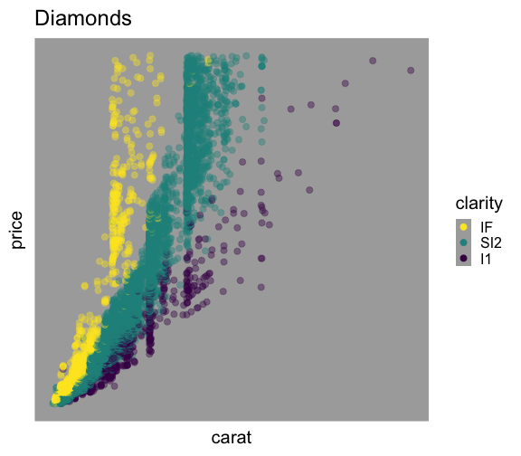
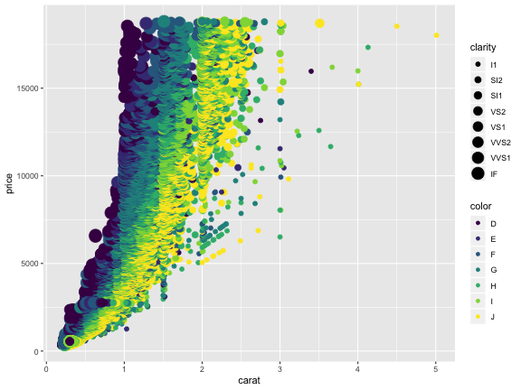

Rによるデータ前処理実習
(Graduate School of Life Sciences, Tohoku University)
データ解析のおおまかな流れ
- コンピュータ環境の整備
- データの取得、読み込み
- 探索的データ解析
- 前処理、加工 (地味。意外と重い。本実習の主題)
- 可視化、仮説生成 (派手！楽しい！)
- 統計解析、仮説検証 (みんな勉強したがる)
- 報告、発表

そもそもなぜ解析？ 生の数字見ればよくない？
生データは情報が多すぎて関係性も何も見えない
print(diamonds)
carat cut color clarity depth table price x y z
<dbl> <ord> <ord> <ord> <dbl> <dbl> <int> <dbl> <dbl> <dbl>
1 0.23 Ideal E SI2 61.5 55 326 3.95 3.98 2.43
2 0.21 Premium E SI1 59.8 61 326 3.89 3.84 2.31
3 0.23 Good E VS1 56.9 65 327 4.05 4.07 2.31
4 0.29 Premium I VS2 62.4 58 334 4.20 4.23 2.63
--
53937 0.72 Good D SI1 63.1 55 2757 5.69 5.75 3.61
53938 0.70 Very Good D SI1 62.8 60 2757 5.66 5.68 3.56
53939 0.86 Premium H SI2 61.0 58 2757 6.15 6.12 3.74
53940 0.75 Ideal D SI2 62.2 55 2757 5.83 5.87 3.64
ダイヤモンド53,490個について10項目の値を持つデータセット
要約統計量(平均とか分散とか)を見てみる
まあ何となく分かった気になる
dplyr::summarize_if(diamonds, is.numeric, mean)
carat depth table price x y z
<dbl> <dbl> <dbl> <dbl> <dbl> <dbl> <dbl>
1 0.7979397 61.7494 57.45718 3932.8 5.731157 5.734526 3.538734
dplyr::summarize_if(diamonds, is.numeric, sd)
carat depth table price x y z
<dbl> <dbl> <dbl> <dbl> <dbl> <dbl> <dbl>
1 0.4740112 1.432621 2.234491 3989.44 1.121761 1.142135 0.7056988
summary(diamonds)
carat cut color clarity depth table price x y z
Min. :0.2000 Fair : 1610 D: 6775 SI1 :13065 Min. :43.00 Min. :43.00 Min. : 326 Min. : 0.000 Min. : 0.000 Min. : 0.000
1st Qu.:0.4000 Good : 4906 E: 9797 VS2 :12258 1st Qu.:61.00 1st Qu.:56.00 1st Qu.: 950 1st Qu.: 4.710 1st Qu.: 4.720 1st Qu.: 2.910
Median :0.7000 Very Good:12082 F: 9542 SI2 : 9194 Median :61.80 Median :57.00 Median : 2401 Median : 5.700 Median : 5.710 Median : 3.530
Mean :0.7979 Premium :13791 G:11292 VS1 : 8171 Mean :61.75 Mean :57.46 Mean : 3933 Mean : 5.731 Mean : 5.735 Mean : 3.539
3rd Qu.:1.0400 Ideal :21551 H: 8304 VVS2 : 5066 3rd Qu.:62.50 3rd Qu.:59.00 3rd Qu.: 5324 3rd Qu.: 6.540 3rd Qu.: 6.540 3rd Qu.: 4.040
Max. :5.0100 I: 5422 VVS1 : 3655 Max. :79.00 Max. :95.00 Max. :18823 Max. :10.740 Max. :58.900 Max. :31.800
J: 2808 (Other): 2531
平均値ばかり見て可視化を怠ると構造を見逃す


データ可視化の重要性
情報の整理 → 正しい解析・新しい発見・仮説生成

データ可視化の重要性
情報の整理 → 正しい解析・新しい発見・仮説生成

可視化だいじ。わかった。
でも「データ分析に費やす労力の8割は前処理」だって？
機械処理しやすい形 vs 人が読み書きしやすい形
- 作図や解析に使えるデータ形式はほぼ決まってる
ggplot(data, ...),glm(..., data, ...), …- 出発点となるデータはさまざま
- 実験ノート、フィールドノート、データベース、…
Happy families are all alike;
every unhappy family is unhappy in its own way
— Leo Tolstoy “Anna Karenina”
tidy datasets are all alike,
but every messy dataset is messy in its own way
— Hadley Wickham
整然データ tidy data
- 縦1列は1つの変数
- 横1行は1つの観測
- 1セルは1つの値
print(diamonds)
carat cut color clarity depth table price x y z
<dbl> <ord> <ord> <ord> <dbl> <dbl> <int> <dbl> <dbl> <dbl>
1 0.23 Ideal E SI2 61.5 55 326 3.95 3.98 2.43
2 0.21 Premium E SI1 59.8 61 326 3.89 3.84 2.31
3 0.23 Good E VS1 56.9 65 327 4.05 4.07 2.31
4 0.29 Premium I VS2 62.4 58 334 4.20 4.23 2.63
--
53937 0.72 Good D SI1 63.1 55 2757 5.69 5.75 3.61
53938 0.70 Very Good D SI1 62.8 60 2757 5.66 5.68 3.56
53939 0.86 Premium H SI2 61.0 58 2757 6.15 6.12 3.74
53940 0.75 Ideal D SI2 62.2 55 2757 5.83 5.87 3.64
整然データ tidy data vs 雑然データ messy data


横1行は1つの観測
1セルは1つの値
整然データ tidy data vs 雑然データ messy data


横1行は1つの観測
1セルは1つの値
整然データ tidy data vs 雑然データ messy data


横1行は1つの観測
1セルは1つの値
整然データ tidy data vs 雑然データ messy data

横1行は1つの観測
1セルは1つの値
整然データのご利益
x軸、y軸、色分け、パネル分けなどを列の名前で指定して簡単作図:
ggplot(diamonds, aes(x = carat, y = price)) +
geom_point(mapping = aes(color = color, size = clarity)) +
facet_wrap(~ cut)

本日2時限目の話題: データ変形・整形
VADeaths
Rural Male Rural Female Urban Male Urban Female
50-54 11.7 8.7 15.4 8.4
55-59 18.1 11.7 24.3 13.6
60-64 26.9 20.3 37.0 19.3
65-69 41.0 30.9 54.6 35.1
70-74 66.0 54.3 71.1 50.0
↓ 作図・解析で使いやすい整然データに変形
lbound ubound region sex death
<int> <int> <chr> <chr> <dbl>
1 50 54 Rural Male 11.7
2 50 54 Rural Female 8.7
3 50 54 Urban Male 15.4
4 50 54 Urban Female 8.4
--
17 70 74 Rural Male 66.0
18 70 74 Rural Female 54.3
19 70 74 Urban Male 71.1
20 70 74 Urban Female 50.0
本日1時限目の話題
✅ データ解析全体の流れ。可視化だいじ
✅ 作図・解析の前にデータの前処理が必要
⬜ なぜRを使うのか？
- 退屈な作業は機械にやらせてラクしよう
- 無料で誰でも使える
⬜ Rの基礎
Rを使わなかった場合の悲劇の例
動物園の混合展示で、各種動物はどのように分布・行動しているか、
それらを決める要因は何か。膨大な観察データに基づく超大作卒論。

生データ: ここはまだそんなに悪くない
週に1回、各個体の位置と行動を種ごとのファイルに記録。
タブは個体、A列B列はXY座標でそれ以降の列は行動、各行はある時刻。


マウスとコピペを駆使して条件ごとに複製・集計
ちゃんと合ってるのかな… ファイルもタブもたくさん…


マウスとコピペを駆使して条件ごとに複製・集計
ちゃんと合ってるのかな… ファイルもタブもたくさん…


目と手で数え、濃淡を計算し、画像ソフトで塗る
泣きながら何十枚も…。無料期間が終わって今は使えない…。


目作業・手作業 ＝ シーシュポスの岩

- 膨大な単純作業がそもそもツラい
- 人間だもの、ミスは防ぎきれない
- ミスを減らすためのチェックもツラい
- ミスを発見 → 初めからやり直し
- 新データ追加 → 初めからやり直し
- 熟練してもツラいまま
- そのときの自分しかできない、記録に残らない
→ 検証のしようがない - 卒論なら努力賞でいいかもしれないけど、科学の手続きとしては問題。
プログラミングで大量のファイルを捌く
先の例に負けず生データはどっさり。でも頑張るのは機械。


こんな感じの図もRでラクラク描けるよ


Rにやらせて楽しよう
- 規則性のある退屈な仕事は人間よりも機械のほうが得意。
- 一度書いたプログラムは、データが変わっても使いまわせる。
- 自分以外の人でも再現・検証できる
- きれいな図を簡単に描ける
- 部分的に改変しながらいろんな解析を試せる。
→ 仮説検証 だけでなく、 仮説生成(探索的データ解析) もやりやすい - やれば上達する。どんどん楽になる！
Rとは
統計解析と作図の機能が充実したプログラミング言語・環境

- クロスプラットフォーム
- Linux, Mac, Windows で動く
- オープンソース
- 永久に無償で、すべての機能を使える。
- 集合知によって常に進化している。
- コミュニティ
- 相談できる人や参考になるウェブサイトがたくさん見つかる。
本日1時限目の話題
✅ データ解析全体の流れ。可視化だいじ
✅ 作図・解析の前にデータの前処理が必要
✅ なぜRを使うのか？
⬜ Rの基礎
- R環境のセットアップ
- Rとの対話
- 表形式データの読み書き
- Rパッケージ
- エラーや疑問への対処
R環境のセットアップ
- R本体
- コマンドを解釈して実行するコア部分。
- よく使われる関数なども標準パッケージとして同梱。
- RStudio Desktop
- Rをより快適に使うための総合開発環境 (IDE)
- 必須じゃないけど便利なので結構みんな使ってる。

RStudioを起動してみよう
そしてコンソールでRと会話してみよう

“Project” を新規作成する
File → New Project… → New Directory → ~/project/r-training-2019

Rスクリプトに書いてから、実行する
File → New File → R script

Rスクリプトに書いてから、実行する
File → New File → R script

Rスクリプトに書いてから、実行する
テキスト選択: shift←↓↑→
コンソールに送る: ctrlreturn

Rスクリプトをプロジェクト内に保存: commands
スクリプト、データ、結果は分けておくのが良い。
r-training-2019/ # プロジェクトの最上階
├── data/ # 元データを置くところ
│ ├── iris.tsv
│ └── diamonds.xlsx
├── r-training-2019.Rproj # これダブルクリックでRStudioを起動
├── hello.R
├── output/ # 結果の出力先
│ ├── iris-petal.png
│ └── iris-summary.tsv
├── transform.R # データ整理・変形のスクリプト
└── visualize.R # 作図のスクリプト
プロジェクト最上階を作業ディレクトリとし、
ファイル読み書きの基準にする。(後で詳しく)
毎回まっさらなワークスペースで始める設定
RStudio → Preferences command,
Tools → Global options
“Restore …” のチェックを外して、 “Save …” のNeverを選択

Rと接する上での心構え
- エラー文を恐れない
- 熟練プログラマでも頻繁にエラーを起こす。
- エラーはRからのメッセージ。意図を読み取って修正しよう。
- 困ったらウェブ検索
- あなたの問題は全世界のRユーザーが既に通った道。
- 日本語で、英語で、エラー文そのもので検索すれば解決策に当たる。
- それでも分からなかったら r-wakalang で相談しよう。

- (コードの)コピペ推奨
- 打ち間違いによるエラーを防げるし、早い。
- ネット上で見つけたコードもまずはコピペしてから自分用に改変。
- (ただし、ライセンスには注意…)
変数/オブジェクトを作ってみよう
x = 42 # Create x
x # What's in x?
[1] 42
y = "24601" # Create y
y # What's in y?
[1] "24601"
x + y # Error!
Error in x + y: non-numeric argument to binary operator
変数/オブジェクトの型
class(x)
[1] "numeric"
is.numeric(x)
[1] TRUE
is.character(x)
[1] FALSE
as.character(x)
[1] "42"
さっき作った y にも同じ関数を適用してみよう。
変数/オブジェクトの型
NULL: 空っぽ- vector: 基本型。一次元の配列。
- logical: 論理値 (
TRUEorFALSE) - numeric: 数値 (整数
42Lor 実数3.1416) - character: 文字列 (
"a string") - factor: 因子 (文字列っぽいけど微妙に違う)
- ↑それぞれに欠損値
NAも定義されてる
- logical: 論理値 (
- matrix: 二次元の行列。vector同様、全要素が同じ型。
- list: 異なる型でも詰め込める太っ腹ベクトル。
- data.frame: 同じ長さのベクトルを並べた長方形のテーブル。重要。
tibble とか tbl_df と呼ばれる亜種もあるけどほぼ同じ。
vector: 一次元の配列
1個の値でもベクトル扱い。
同じ長さ(または長さ1)の相手との計算が得意。
x = c(1, 2, 9) # 長さ3の数値ベクトル
x + x # 同じ長さ同士の計算
[1] 2 4 18
y = 10 # 長さ1の数値ベクトル
x + y # 長さ3 + 長さ1 = 長さ3 (それぞれ足し算)
[1] 11 12 19
sqrt(x) # square root
[1] 1.000000 1.414214 3.000000
# We don't have to write for-loop like this
z = c(0, 0, 0)
for (i in seq_len(3)) {
z[i] = sqrt(x[i])
}
data.frame: 長方形のテーブル (重要!)
iris はアヤメ属3種150個体に関する測定データ。
Rに最初から入ってて、例としてよく使われる。
print(iris)
Sepal.Length Sepal.Width Petal.Length Petal.Width Species
<dbl> <dbl> <dbl> <dbl> <fct>
1 5.1 3.5 1.4 0.2 setosa
2 4.9 3.0 1.4 0.2 setosa
3 4.7 3.2 1.3 0.2 setosa
4 4.6 3.1 1.5 0.2 setosa
--
147 6.3 2.5 5.0 1.9 virginica
148 6.5 3.0 5.2 2.0 virginica
149 6.2 3.4 5.4 2.3 virginica
150 5.9 3.0 5.1 1.8 virginica
150行5列: 長さ150の数値ベクトル4本と因子ベクトル1本。
data.frameを眺める
概要を掴む:
head(iris, 6) # 先頭だけ見てみる
nrow(iris) # 行数: Number of ROWs
ncol(iris) # 列数: Number of COLumns
names(iris) # 列名
summary(iris) # 要約
View(iris) # RStudioで閲覧
str(iris) # 構造が分かる形で表示
tibble [150 × 5] (S3: tbl_df/tbl/data.frame)
$ Sepal.Length: num [1:150] 5.1 4.9 4.7 4.6 5 5.4 4.6 5 4.4 4.9 ...
$ Sepal.Width : num [1:150] 3.5 3 3.2 3.1 3.6 3.9 3.4 3.4 2.9 3.1 ...
$ Petal.Length: num [1:150] 1.4 1.4 1.3 1.5 1.4 1.7 1.4 1.5 1.4 1.5 ...
$ Petal.Width : num [1:150] 0.2 0.2 0.2 0.2 0.2 0.4 0.3 0.2 0.2 0.1 ...
$ Species : Factor w/ 3 levels "setosa","versicolor",..: 1 1 1 1 1 1 1 1 1 1 ...
ほかのデータもいろいろ見てみよう, e.g., mtcars, quakes, data()
data.frameを眺める
部分的なdata.frameを取得する:
iris[2, ] # 2行目
iris[2:5, ] # 2行目から5行目まで
iris[, 3:4] # 3-4列目
iris[2:5, 3:4] # 2-5行目, 3-4列目
vectorとして取得する:
iris[[3]] # 3列目
iris$Petal.Length # Petal.Length列
iris[["Petal.Length"]] # Petal.Length列
iris[["Petal.Length"]][2] # Petal.Length列の2番目
結果がdata.frameになるかvectorになるか微妙:
iris[, 3] # 3列目
iris[, "Petal.Length"] # Petal.Length列
iris[2, 3] # 2行目3列目
iris[2, "Petal.Length"] # 2行目Petal.Length列
行 (row), 列 (column) の憶え方


data.frameの新規作成
同じ長さの 列(column) vector を結合して作る:
x = c(1, 2, 3)
y = c("A", "B", "C")
mydata = data.frame(x, y)
print(mydata)
x y
1 1 A
2 2 B
3 3 C
data.frameの読み書き
-
readxlパッケージを使えば
.xlsxファイルも読める、けど -
カンマ区切り(CSV)とかタブ区切り(TSV)のテキストが無難。
-
ファイル名は作業ディレクトリからの相対パスで指定。
install.packages("readr") # R標準の read.table() とかは難しいので library(readr) # パッケージのやつを使うよ readr::write_tsv(iris, "data/iris.tsv") # 書き出し iris2 = readr::read_tsv("data/iris.tsv") # 読み込み -
現在の作業ディレクトリとその中身を確認しておこう:
getwd() # Get Working Directory list.files(".") # List files in "." list.files("data") # List files in "./data"
R組み込みデータや自作データを読み書きしてみよう
Rパッケージ
便利な関数やデータセットなどをひとまとめにしたもの。
- Standard Packages
- Rの標準機能。何もしなくても使用可能
- Contributed Packages
- 有志により開発され、 CRAN にまとめて公開されている。
- 要インストール。使う前に読み込むおまじないが必要。
install.packages("readr") # 一度やればOK
library(readr) # 読み込みはRを起動するたびに必要
update.packages() # たまには更新しよう
- 素のRも覚えきってないのにいきなりパッケージ？
- 大丈夫。誰も覚えきってない。
- パッケージを使わないR作業 = 火もナイフも使わない料理
tidyverse

Rでデータを上手に扱うためのパッケージ群
install.packages("tidyverse")
library(tidyverse)
# 関連パッケージが一挙に読み込まれる
- 統一的な使い勝手
- 暗黙の処理をなるべくしない安全設計
- シンプルな関数を繋げて使うデザイン
便利なパッケージはほかにもたくさん


- readxl: エクセル形式の読み込み
- stringr: 文字列の処理
- Bioconductor: バイオインフォマティクス関連
- igraph: グラフ(ネットワーク)関連
- rgl: 3Dの作図
- R Markdown:
Rコマンドと結果を埋め込んだPDFやHTMLを作る。
この発表スライドもそうやって作った。
研究ノート、レポート作成、共同研究者への報告にも便利！
疑問やエラーの解決方法
- RStudio内にヘルプを表示:
?sum,help.start() - 変数の構造を確かめる:
str(iris),attributes(iris) - エラー文をちゃんと読む:
No such file or directory - パッケージの公式ドキュメントをちゃんと読む
- パッケージ名やエラー文をコピペしてウェブ検索
→ StackOverflow や個人サイトに解決策 - 身近な経験者に訊く
- Slackの
r-wakalang
で質問を投稿する。
内容によってチャンネルを選ぶ:#r_beginners,#ggplot2 - 状況を再現できる小さな例 (reprex) を添えて質問すると回答を得やすい。
本日1時限目の話題
✅ データ解析全体の流れ。可視化だいじ。
✅ 作図・解析の前にデータの前処理が必要
✅ なぜRを使うのか？
✅ Rの基礎
- まずRスクリプトに書いてから、コンソールで実行
- “Project"構造を意識してファイルを配置
- 変数には型がある: 数値、文字列、データフレーム
- 便利なパッケージを使おう
- ヘルプはそこら中に転がってる
参考、協力
- R for Data Science — Hadley Wickham & Garrett Grolemund
- Website, Book
- 日本語版書籍(Rではじめるデータサイエンス)
- 整然データとは何か — @f_nisihara
- https://speakerdeck.com/fnshr/zheng-ran-detatutenani
- https://id.fnshr.info/2017/01/09/tidy-data-intro/
- 過去の講義資料
- 「Rにやらせて楽しよう — データの可視化と下ごしらえ」 岩嵜航 2018
- 「Rを用いたデータ解析の基礎と応用」石川由希 2019 名古屋大学
- 「Hands-on R Lecture for Makino Lab」 岩嵜航 2019 東北大学
- 壮絶な手作業の例
- 総研大の学生 M. S. さん (現在はRユーザー)